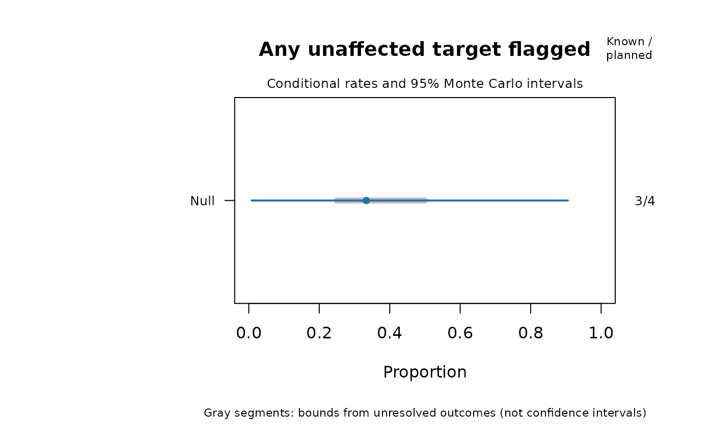

Evaluate screening outcomes against a planned simulation roster
Source:R/api-screening-performance.R
mfrm_screening_performance.RdIn a simulation where the true problem status is known, summarize how often a warning rule detects affected raters or flags unaffected raters. Supply the planned trials and observed flags; this function does not generate or fit simulated ratings. Unknown truth in real ratings cannot supply these rates. Unavailable screens remain unavailable, and correlated raters are not counted as independent simulation trials.
Arguments
- roster
Data frame with
Condition,Replicate,Targetidentifiers and logicalAffected:TRUEdenotes the prespecified departure that the screen is intended to detect. Include every planned target and replication, including failed runs. Within a condition, use the same targets and truth labels in every replication. Put different designs or methods in separate conditions. Identifiers are matched exactly as character labels.- results
Data frame with the same three identifier columns and logical
Flag(TRUE,FALSEorNA). Omitted result rows remain unavailable. Extra or duplicate keys are refused. Additional columns are retained in the source results, for example numerical status and failure messages.- rule
Nonempty description of the prespecified screen, including its thresholds, comparison family and any selection/refitting procedure.
- level
Confidence level for exact binomial Monte Carlo intervals; default 0.95. These describe simulation uncertainty, not an interval for rater severity or a guarantee of screening accuracy.
- ...
Unused by print and summary methods.
- x, object
An object returned by
mfrm_screening_performance().
Value
An mfrm_screening_performance object with by_target, by_family,
aligned outcomes, replication-level family_outcomes, the original
roster and results, and settings. Tables retain full precision.
Planned, Available, Unavailable and Positive give denominators and
counts. Rate and MCSE condition on available outcomes; MCLower and
MCUpper are exact binomial bounds. AllTrialsLower and AllTrialsUpper
bound the realized proportion across all planned trials by assigning every
unknown outcome negative or positive. These latter bounds are not confidence
intervals. A family with no relevant targets has zero planned trials and
undefined rates. CompleteScreens counts fully observed families.
Details
A target's rate is sensitivity when Affected = TRUE and a false
flag rate when Affected = FALSE. The family summaries count whether any
unaffected target was flagged, and whether any affected target was flagged,
once per replication. They do not pool all raters into a binomial sample.
An observed positive makes an any-flag event known even if another target
is unavailable. Without a positive, any unavailable member leaves the event
unknown; only a complete negative family establishes no flag.
Replications must be independent and identically generated within each condition for the binomial uncertainty calculation. Pairing conditions does not invalidate their separate intervals, but a comparison between paired conditions needs its own paired analysis. Zero observed false flags does not imply a zero population probability: the exact upper bound stays positive. Conditional rates may be biased for the intended all-trial rate if failures depend on outcomes. Inspect availability and all-trial bounds together.
This helper neither creates flags nor establishes their validity. A severity difference alone is not rater misfit. Known simulation truth is required; labeling unknown real-world rater quality does not create a validation study. Define computable screening output separately from formal inference eligibility. The recorded rule cannot prove that it was selected before seeing outcomes.
References
Morris, T. P., White, I. R. and Crowther, M. J. (2019). Using simulation studies to evaluate statistical methods. Statistics in Medicine, 38, 2074–2102. doi:10.1002/sim.8086 .
See also
mfrm_screening_sensitivity() for several threshold bands,
evaluate_mfrm_signal_detection(), facet_quality_dashboard()
Examples
roster <- expand.grid(Condition = "Null", Replicate = 1:4,
Target = c("R1", "R2"), stringsAsFactors = FALSE)
roster$Affected <- FALSE
results <- roster[c("Condition", "Replicate", "Target")]
results$Flag <- c(FALSE, TRUE, FALSE, NA, FALSE, NA, FALSE, NA)
performance <- mfrm_screening_performance(roster, results,
rule = "Infit or Outfit outside [0.5, 1.5]; both raters; no exclusion/refit")
summary(performance)
#> $by_target
#> Condition Target Affected Metric Planned Available Unavailable
#> 1 Null R1 FALSE False flag rate 4 3 1
#> 2 Null R2 FALSE False flag rate 4 2 2
#> Positive Rate MCSE MCLower MCUpper AllTrialsLower
#> 1 1 0.3333333 0.2721655 0.008403759 0.9057007 0.25
#> 2 0 0.0000000 0.0000000 0.000000000 0.8418861 0.00
#> AllTrialsUpper
#> 1 0.5
#> 2 0.5
#>
#> $by_family
#> Condition Metric Targets CompleteScreens Planned
#> 1 Null Any unaffected target flagged 2 2 4
#> 2 Null Any affected target flagged 0 0 0
#> Available Unavailable Positive Rate MCSE MCLower MCUpper
#> 1 3 1 1 0.3333333 0.2721655 0.008403759 0.9057007
#> 2 0 0 0 NA NA NA NA
#> AllTrialsLower AllTrialsUpper
#> 1 0.25 0.5
#> 2 NA NA
#>
#> $settings
#> $settings$rule
#> [1] "Infit or Outfit outside [0.5, 1.5]; both raters; no exclusion/refit"
#>
#> $settings$level
#> [1] 0.95
#>
#> $settings$uncertainty_unit
#> [1] "Independent simulation replication within condition"
#>
#>
plot(performance)
